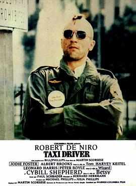

出租车司机 / Taxi Driver
又名：的士司机(港) / 计程车司机(台) / 出租汽车司机
好伟大的开场，出租车在雾气中驶出，随之车水马龙流光。司机算得上是个流氓无产者，志趣不高甚至低级，但他也有最基本最简单的道德评价标准，孩子是值得保护的。发型好像剪辑失误了，最后的枪战不仅节奏有些问题，伤痕还穿帮了。这时候的马丁真青涩。
作品信息
| 导演 | 马丁·斯科塞斯 |
| 编剧 | 保罗·施拉德 |
| 主演 | 罗伯特·德尼罗 / 朱迪·福斯特 / 斯碧尔·谢波德 / 艾伯特·布鲁克斯 / 哈威·凯特尔 / 戴安娜·阿伯特 / 维克多·阿尔果 / 吉诺·阿迪托 / 彼得·博伊尔 / 布伦达·迪克森 |
| 类型 | 剧情 / 犯罪 |
| 制片国家/地区 | 美国 |
| 语言 | 英语 / 西班牙语 |
| 上映日期 | 1976-02-08(美国) |
| 片长 | 113分钟 |
| IMDb | tt0075314 |
说过什么
2025-11-11 15:05:48
广播 · 看过 · ★★★★☆
好伟大的开场，出租车在雾气中驶出，随之车水马龙流光。司机算得上是个流氓无产者，志趣不高甚至低级，但他也有最基本最简单的道德评价标准，孩子是值得保护的。发型好像剪辑失误了，最后的枪战不仅节奏有些问题，伤痕还穿帮了。这时候的马丁真青涩。
2022-05-27 12:22:03
广播 · 想看
最后一次看到是 2026-10-07T23:12:57+08:00 · 豆瓣原页